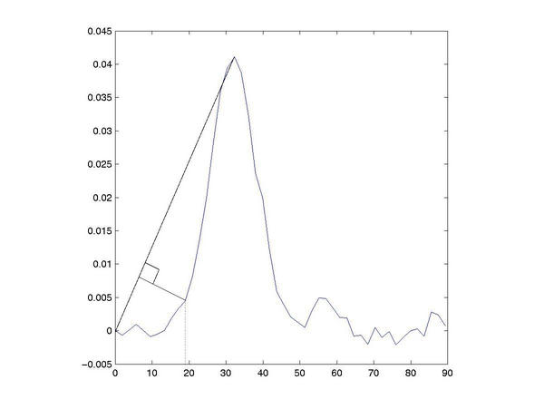

VolPerf
This code is an implementation of the basic perfusion methodology as
outlined by Ostergaard (MRM 1996). Some fancy bits were added though
mainly for considering the effects of tracer delay. There are as
follows :
-
aif_fit and conc_fit :
-
Instead of considering the time-curves for the arterial input function
and each voxel directly, a gamma variate function may be fit to these
curves and this gamma variate function considered instead.
-
shift_aif, shift_aif_exact and shift_conc :
-
Once a measure of the tracer delay has been determined, the aif may be
aligned to the voxel (either within one tr, ie. the resolution of the
signal time-curves, or interpolation may be used to fit these
concentrations exactly), or the voxel may be aligned with the aif.
These parameters will either affect the aif matrix or each individual
voxel time-curve.
-
bat_gamma :
-
The start of the concentration time-curve is defined as the bolus
arrival time (BAT) of the gamma variate function.
-
bat_slope :
-
The start of the concentation time-curve is defined by drawing a line
between the start of the measured profile and the maximum height of the
curve, and then determining the point that is furtherest from this
line.

-
bat_cutoff :
-
The start of the concentation time-curve is defined as a certain
percentage of the maximum of the curve.